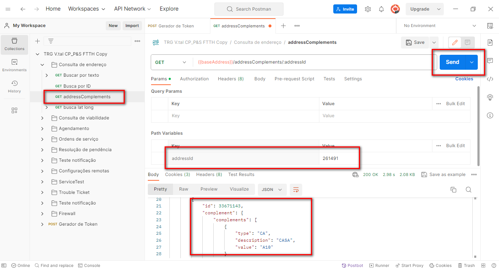
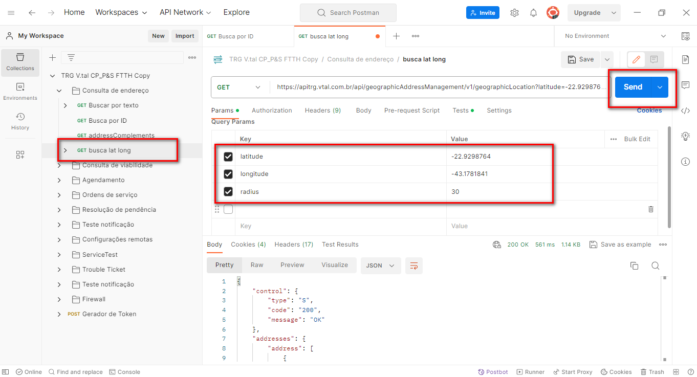
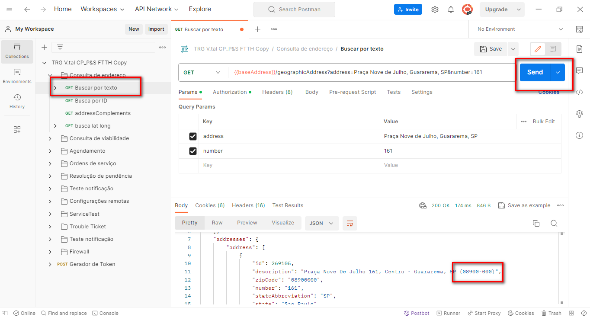

! Video Teórico
! Passo a Passo em Wiki
1.Em Consulta de endereço, "buscar por texto";
2. Preencha os campos conforme desejado;

3. Clique em Send;
4. A API retornará o "AddressID" que posteriormente será usado.
1.Em "AddressComplements";
2.Insira o AddressID no campo solicitado;
3. Clique em Send;
4.Caso tenha a API retornará uma lista de complementos.
1.Em "busca por ID";
2.Insira o "AddressID";
3.Ela retornará a latitude e a longitude;

4.Vá para "busca lat long";
5.Preencha os campos com as informações adquiridas no passo 3, mais o "radius" com um numero menor que 50;
6. Clique em Send;
7. Ela retornará as informações do local.
1.Em "busca por texto";
2.Digite o nome mais o numero do lugar com CEP único;
3. Clique em Send;
4.A API retornará a descrição do local, com o CEP único.
